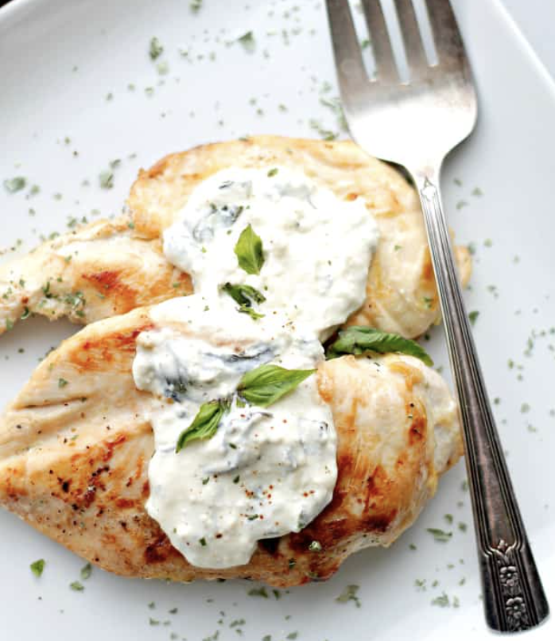

Chicken Feta

A juicy chicken breast rests and is coated with a creamy feta sauce waiting to be eaten.
Ingredients
- 2 Chicken Breasts
- Fresh Basil
- Full Fat Yogurt
- Butter
- Slap Ya Mama Seasoning
- High Quality Feta Cheese
- Salt & Pepper
- Garlic
Steps
- Slice chicken breasts thinly. Coat in slap ya mama seasoning. Cook on both sides until done.
- Remove Chicken from pan and let rest covered with tin foil.
- Lower the heat and melt butter. Cook garlic. Whisk in yogurt and feta cheese.
- Stir in basil and season with salt an dpepper to taste.
- Serve over rice and dollop sauce on top. Best enjoyed with a glass of red wine.